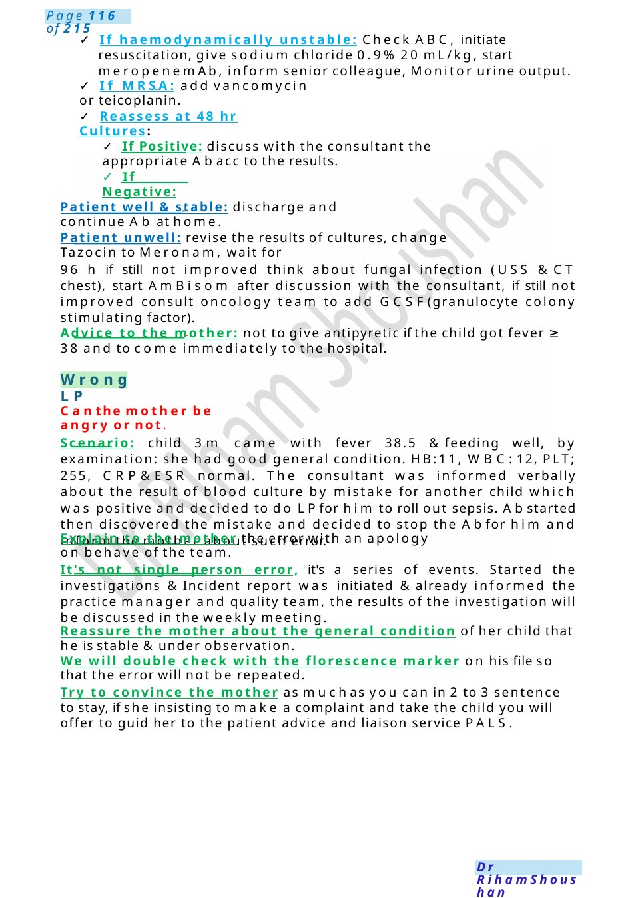
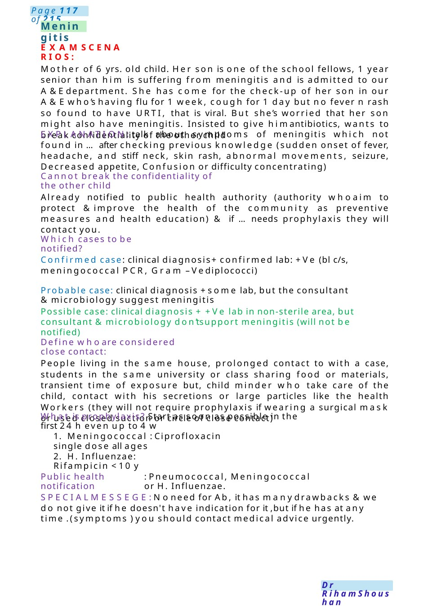

WrongLP
✓ If haemodynamically unstable: Check ABC, initiate resuscitation, give sodium chloride 0.9% 20 mL/kg, start meropenem Ab, inform senior colleague, Monitor urine output. ✓ If Positive: discuss with the consultant the appropriate Abacc to the results.
Scenario Summary
✓ If haemodynamically unstable: Check ABC, initiate resuscitation, give sodium chloride 0.9% 20 mL/kg, start meropenem Ab, inform senior colleague, Monitor urine output. ✓ If Positive: discuss with the consultant the appropriate Abacc to the results.
Full Original Scenario

WrongLP
- If haemodynamically unstable: Check ABC, initiate resuscitation, give sodium chloride 0.9% 20 mL/kg, start meropenem Ab, inform senior colleague, Monitor urine output.
- If MRSA: add vancomycin or teicoplanin.
- Reassess at 48 hr Cultures:
- If Positive: discuss with the consultant the appropriate Abacc to the results.
- If Negative:
Patient well & stable: discharge and continue Ab at home.
Patient unwell: revise the results of cultures, change Tazocin to Meronam, wait for
96 h if still not improved think about fungal infection (USS &CT chest), start Am Bisom after discussion with the consultant, if still not improved consult oncology team to add GCSF(granulocyte colony stimulating factor).
Advice to the mother: not to give antipyretic if the child got fever ≥ 38 and to come immediately to the hospital.
Canthe mother be angry or not.
Scenario: child 3m came with fever 38.5 &feeding well, by examination: she had good general condition. HB:11, WBC:12, PLT; 255, CRP&ESR normal. The consultant was informed verbally about the result of blood culture by mistake for another child which was positive and decided to do LPfor him to roll out sepsis. Abstarted then discovered the mistake and decided to stop the Abfor him and inform the mother about such error.
Explain to the mother the error with an apology on behave of the team.
It's not single person error, it's a series of events. Started the investigations &Incident report was initiated &already informed the practice manager and quality team, the results of the investigation will be discussed in the weekly meeting.
Reassure the mother about the general condition of her child that he is stable &under observation.
We will double check with the florescence marker on his file so that the error will not be repeated.
Try to convince the mother as muchas you can in 2 to 3 sentence to stay, if she insisting to make a complaint and take the child you will offer to guid her to the patient advice and liaison service PALS.

Meningitis
EXAMSCENARIOS:
Mother of 6 yrs. old child. Her son is one of the school fellows, 1 year senior than him is suffering from meningitis and is admitted to our A&Edepartment. She has come for the check-up of her son in our A&Ewho’s having flu for 1 week, cough for 1 day but no fever n rash so found to have URTI, that is viral. But she’s worried that her son might also have meningitis. Insisted to give himantibiotics, wants to break confidentiality of the other child
EXPLANATION:talk about symptoms of meningitis which not found in ...after checking previous knowledge (sudden onset of fever, headache, and stiff neck, skin rash, abnormal movements, seizure, Decreased appetite, Confusion or difficulty concentrating)
Cannot break the confidentiality of the other child
Already notified to public health authority (authority whoaim to protect &improve the health of the community as preventive measures and health education) & if ...needs prophylaxis they will contact you.
Which cases to be notified?
Confirmed case: clinical diagnosis+ confirmed lab: +Ve (bl c/s, meningococcal PCR, Gram –Vediplococci)
Probable case: clinical diagnosis +some lab, but the consultant µbiology suggest meningitis
Possible case: clinical diagnosis + +Ve lab in non-sterile area, but consultant µbiology don’tsupport meningitis (will not be notified)
Define whoare considered close contact:
People living in the same house, prolonged contact to with a case, students in the same university or class sharing food or materials, transient time of exposure but, child minder who take care of the child, contact with his secretions or large particles like the health Workers (they will not require prophylaxis if wearing a surgical mask or used closed suction or circle of close contact)
What is prophylaxis? Start as soon as possible in the first 24 h even up to 4 w
1. Meningococcal : Ciprofloxacin single dose all ages
2. H. Influenzae: Rifampicin <10 y
Public health notification
: Pneumococcal, Meningococcal or H. Influenzae.
SPECIALMESSEGE: Noneed for Ab, it has manydrawbacks &we do not give it if he doesn't have indication for it ,but if he has at any time .(symptoms ) you should contact medical advice urgently.